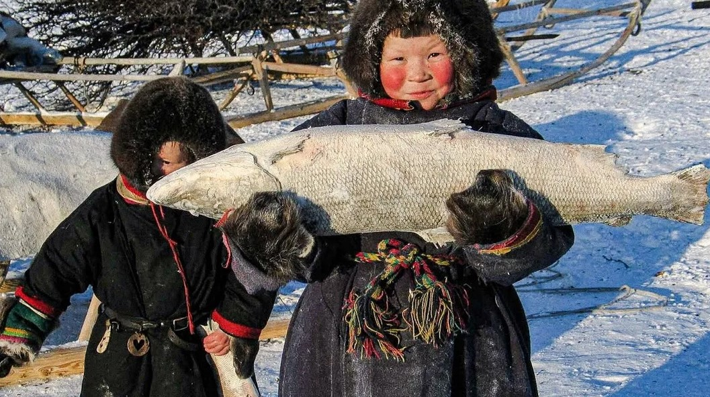

1. Понятие коренных народов
Коренные народы — это этнические группы, исторически проживающие на определённой территории, сохраняющие свои традиции, язык, культуру и уклад жизни.
2. Критерии коренных народов
- Проживание на территории традиционного расселения предков.
- Сохранение традиционного образа жизни, хозяйствования и промыслов.
- Численность менее 50 тысяч человек.
- Осознание себя отдельным этносом.
3. Коренные малочисленные народы Севера, Сибири и Дальнего Востока
Эти регионы наиболее богаты малочисленными народами. Среди них:
- Ненцы
- Чукчи
- Эвенки
4. Основные занятия
- Оленеводство: Ненцы, чукчи, долганы.
- Рыболовство: эскимосы, нивхи. 
- Охота: эвенки, удэгейцы.
7. Проблемы и вызовы
- Сокращение численности населения из-за миграции и низкой рождаемости.
- Нарушение экологического баланса на традиционных территориях.
- Недостаточное финансирование программ поддержки.
- Угасание национальной идентичности.
9. Вывод
Коренные народы России — уникальная часть этнокультурного наследия страны, требующая комплексной поддержки для сохранения их идентичности, языка и традиционного уклада жизни в условиях современности.